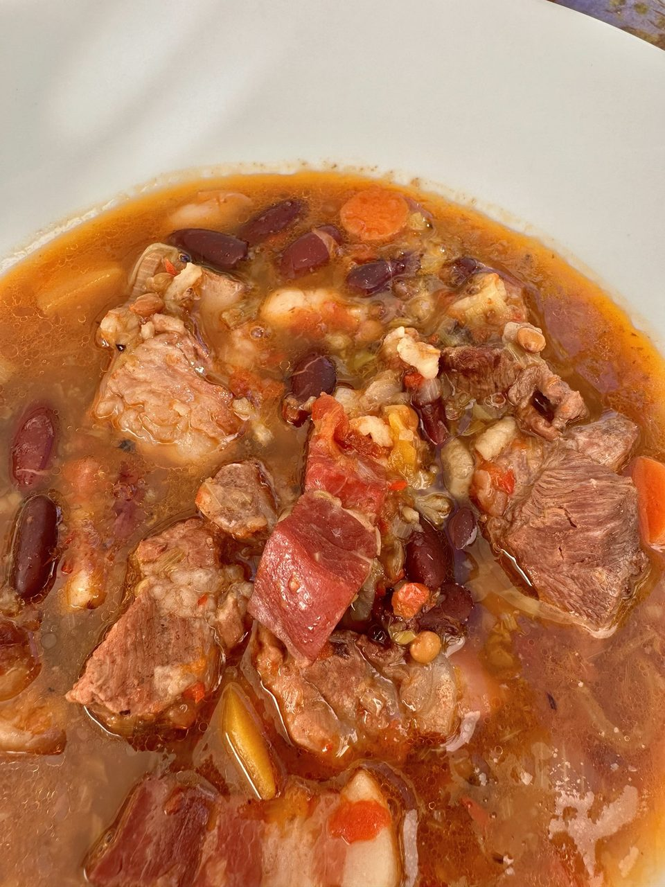
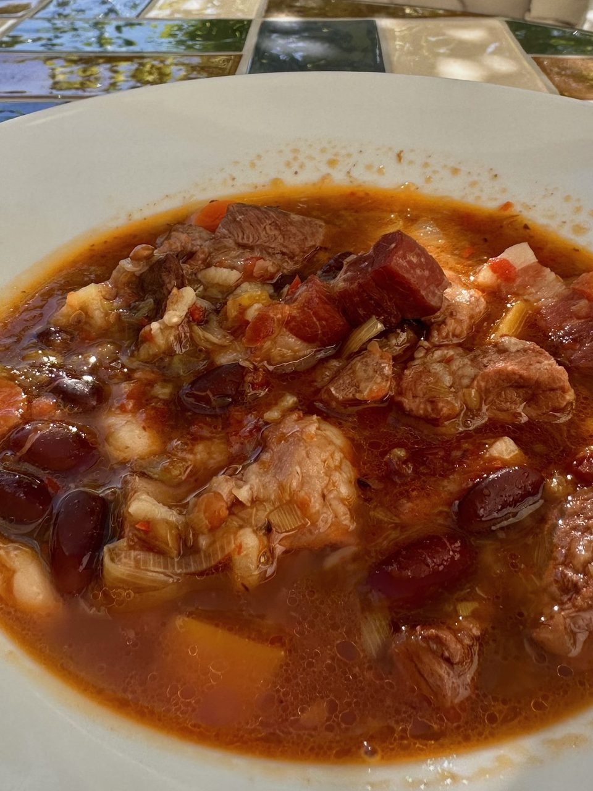

Comida tradicional
alicantina
‹ Todas las recetas
Olleta alicantina


Ingredientes
100 g de alubias pintas
70 g de alubias blancas
250 g de costilla de cerdo
250 g de morcillo de ternera
100 g de panceta
1 hueso de jamón
1 hueso de caña
2 morcillas de cebolla
1 blanquet
1 cebolleta
1 puerro
½ pimiento rojo
2 tomates
2 zanahorias
150 g de calabaza
150 g de judías verdes
2 ñoras
Un puñado de lentejas cocidas
Un puñado de arroz redondo
Laurel, aceite de oliva y sal
Preparación
La noche antes.
Poner las
alubias
en remojo.
El caldo.
En una olla grande, echar 2,5 l de
agua fría
con las
carnes
, los
huesos
, el
laurel
y la parte verde del
puerro
. Cuando hierva, quitar la espuma.
Las alubias.
Escurrirlas y echarlas. Cocer 1 hora a fuego suave, asustándolas 3 veces con un chorrito de
agua fría
.
El sofrito.
Poner las
ñoras
a remojar en agua caliente. Mientras, picar la
cebolleta
, el
puerro
y el
pimiento
y pocharlos a fuego lento con
aceite
. Añadir la carne de las ñoras y el
tomate
rallado, y dejar que se reduzca. Si se pega, despegar el fondo con un cucharón de caldo.
Las verduras.
Echar a la olla el
sofrito
, la
zanahoria
y la
calabaza
, y dejar cocer 20 minutos.
El embutido.
Añadir las
morcillas
y el
blanquet
pinchados con un palillo, y también las
judías verdes
. Dejar cocer 15 minutos a fuego muy suave.
El arroz y las lentejas.
Echar el
arroz
y, en los últimos 10 minutos, las
lentejas
bien aclaradas. Probar de
sal
al final, porque el jamón ya sala.
El reposo.
Apagar el fuego, tapar la olla y dejar reposar 10 minutos.